按照标准宇宙学模型, 宇宙起源于一百多亿年前的一次大爆炸。大爆炸之前, 没有物质, 没有时间, 也没有空间, 只有真空——但这并不是哲学上真正一无所有的虚空, 而是物理上充满了量子涨落的“沸腾的真空”, 它蕴涵了巨大的潜能。我们可以从量子力学的不确定关系出发, 来分析一下真空量子涨落给出的时间尺度和能量尺度, 这也就是宇宙诞生时相应的时间和能量尺度。按照不确定关系, 时间的涨落与能量的涨落之间满足
\Delta t \Delta E \approx t E \approx \frac {\hbar}{2} = \frac {h}{4 \pi}\tag{7.7.1}
其中 h 为普朗克常数。另一方面， E \simeq kT ，且宇宙诞生后，应满足(7.6.23)，即 a \propto t^{1/2} ，以及 a \propto 1/T 。严格计算给出 T 和 t 之间的关系是
T = \left(\frac {3 c ^ {2}}{3 2 \pi G a _ {r}}\right) ^ {1 / 4} \frac {1}{\sqrt {t}}\tag{7.7.2}
其中 a_{r} 即为（7.3.15）所示的辐射密度常数。这样，(7.7.1)化为
t E \approx t \cdot k T \approx t \cdot k \left(\frac {3 c ^ {2}}{3 2 \pi G a _ {r}}\right) ^ {1 / 4} \frac {1}{\sqrt {t}} \approx \frac {h}{4 \pi}\tag{7.7.3}
最后一个关系式给出
t \approx \frac {h ^ {2}}{1 6 \pi^ {2} k ^ {2} \left(\frac {3 c ^ {2}}{3 2 \pi G a _ {r}}\right) ^ {1 / 2}} = \pi \left(\frac {h G}{4 5 c ^ {5}}\right) ^ {1 / 2} \simeq 6 \times 1 0 ^ {- 4 4} \mathrm{s}\tag{7.7.4}
通常把这一时间尺度称为普朗克时间 t_{pl} ，并把其值取为
t _ {\mathrm{pl}} = \sqrt {\frac {\hbar G}{c ^ {5}}} \simeq 1 0 ^ {- 4 3} \mathrm{s}\tag{7.7.5}
其中 \hbar\equiv h/2\pi 。与普朗克时间相应的能量定义为普朗克能量 E_{pl} ：
E _ {\mathrm{pl}} = \frac {\hbar}{t _ {\mathrm{pl}}} = \sqrt {\frac {\hbar c ^ {5}}{G}} \simeq 1 0 ^ {1 9} \mathrm{GeV}\tag{7.7.6}
与此能量相应的质量称为普朗克质量 M_{\mathrm{pl}} ：
M _ {\mathrm{pl}} = E _ {\mathrm{pl}} / c ^ {2} = \sqrt {\frac {\hbar c}{G}} \simeq 2 \times 1 0 ^ {- 5} \mathrm{g}\tag{7.7.7}
另一方面，普朗克时间 t_\mathrm{pl} 乘以光速就得到普朗克长度 l_\mathrm{pl} ，即
l _ {\mathrm{pl}} = c t _ {\mathrm{pl}} = \sqrt {\frac {h G}{c ^ {3}}} \simeq 1 0 ^ {- 3 3} \mathrm{cm}\tag{7.7.8}
普朗克时间和普朗克长度的物理意义是，它们分别代表经典连续时空中所能测量的最小时间和空间间隔。小于普朗克时间和普朗克长度，时间和空间就变得不连续，也就是量子化了。有意义的是，上述普朗克时间、长度及能量的表示式，都是 \hbar 、 G 和 c 这几个基本物理常数的某种组合。 \hbar 代表量子效应， G 代表引力作用， c 代表相对论效应。因此，我们宇宙的诞生，可以看成是这几种基本物理效应和作用的综合结果。
总之，宇宙大爆炸即是一次 t \to 0, E \to \infty 的巨大真空潜能的释放。由相对论的质能关系 E = mc^2 ，释放出来的能量可以转化为物质粒子。从这个意义上说，大爆炸就是一次规模无比巨大的、“无中生有”的真空潜能转变为物质粒子（物理宇宙）的过程。大爆炸之后，时空创生了，物质创生了，宇宙也就创生了。在此之前，宇宙处于时空的量子混沌状态，不存在经典意义下的连续时间和空间，也不存在任何因果联系。只是在普朗克时间之后，时空才具有我们熟悉的连续的形式，并且具有了确定的拓扑结构——闭合的、开放的或平直的，单连通的或者多连通的。更重要的是，时空的拓扑结构自宇宙创生之后不会再变化，这就是大爆炸宇宙的最早的历史遗迹。最后还要指出，虽然常常把大爆炸描述为原初的“爆炸”，但它与通常的爆炸有一个关键性的区别——它的向外运动是某种初始条件的结果，而不是由向外的压力所造成的。
这一小节我们对宇宙演化的热历史做一个概述，主要介绍自大爆炸之后直到现在，宇宙演化各阶段发生的主要物理过程（参见图7.27）。接下来的几小节，将分别对几个重要阶段做进一步的讨论。宇宙的演化过程可以用 t, \rho, T, R 等不同参数来描述，但其中最好的参数是温度 T ，因为它可以直接测量，同时， kT 给出了粒子热运动能量的典型值。随着宇宙的（绝热）膨胀，温度以及能量密度都逐渐降低。对应于不同的能量密度，宇宙依次进入粒子物理、核物理、原子物理等不同物理学领域的演化阶段。
总的说来，当宇宙的温度足够高，使得 kT > m_{\alpha}c^{2} ，其中 m_{\alpha} 代表某种粒子的质量，则粒子 \alpha 与对应的反粒子 \bar{\alpha} ，以及辐射 \gamma 之间处于热平衡状态：
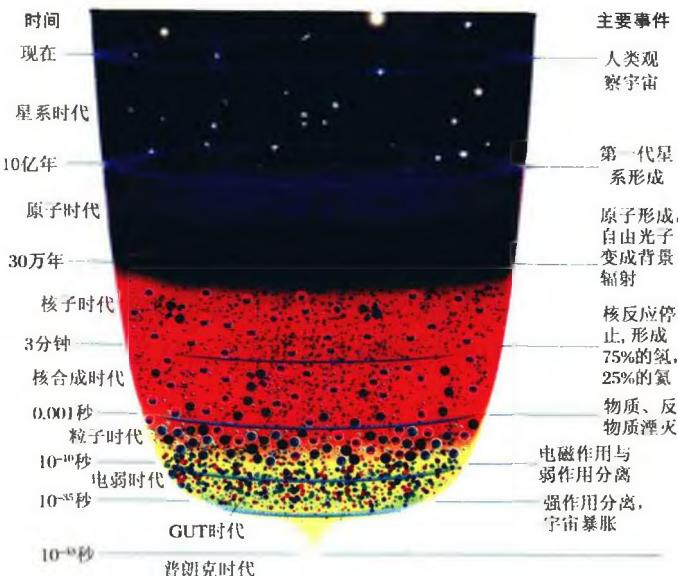
图 7.27 宇宙演化的主要阶段及其发生的物理过程\alpha + \overline {{{{\alpha}}}} \Leftrightarrow \gamma + \gamma\tag{7.7.9}
当温度的下降使得 kT < m_{o}c^{2} ，上述平衡就被打破了，主要发生的是湮灭反应。这样，如果宇宙中的正、反粒子严格对称，湮灭的结果将会使宇宙中所有的粒子消失，只剩下光子。如果的确是这种情况，则星系、恒星、地球，包括我们人类在内，都将不复存在。但事实并非如此，这说明宇宙中的正反物质之间并不是严格对称的，而是存在着微小的不对称，即对称破缺。显然，只要正粒子比反粒子多出 10^{-9} ，当绝大多数正反粒子湮灭之后，就会有极少量的正粒子残留下来，演化为我们今天所看到的形态万千的宇宙天体，并且给出观测到的光子数与重子数之比，即 n_{r}/n_{B} \sim 10^{9} 。这样，宇宙极早期正反物质之间的微小对称破缺，就可以同时解释正反物质粒子极大的不对称，以及巨大的光子数与重子数之比这两个观测事实。但如前所述，这一对称破缺产生的原因现在还不清楚，包括大统一理论在内的各种理论，至今也还没能对此给出令人满意的解释。
T \sim 1 0 ^ {3 2} \mathrm{K} (k T \approx E _ {\mathrm{pl}} \simeq 1 0 ^ {1 9} \mathrm{GeV})
这一时期相应于时空创生，称为普朗克时期。
T > 10^{12} K(强子时期)
在温度高于 10^{12}\mathrm{K} 的极早时期，宇宙中包含着处于热平衡的多种粒子，包括光子、轻子、介子和核子以及它们的反粒子。介子与核子之间的强相互作用使得这个时期的物态方程非常复杂。这一时期称为强子时期。
ⓞ T \sim 1 0 ^ {1 2} \mathrm{K(100MeV)}
我们知道，核子(质子、中子)的质量大约为 1000\mathrm{MeV} ，而 1\mathrm{MeV} \approx 10^{10}\mathrm{K} 。因而当宇宙温度降到 10^{12}\mathrm{K} （此时能量～ 100\mathrm{MeV} ，相应的宇宙年龄 t \approx 0.01\mathrm{s} ），此前曾大量存在的质子、中子绝大部分已经湮灭，辐射与核子能量密度分别为 \rho_r \sim 10^{14}\mathrm{g/cm^3} ， \rho_B \sim 10^5\mathrm{g/cm^3} 。宇宙中此时主要包含着光子、 \mu^\pm 介子、正负电子 \mathbf{e}^\pm 、正反中微子 \nu - \bar{\nu} ，以及极少的核子混合物（由数目相等的质子和中子组成）。所有这些粒子都处于热平衡中。
T = 1 0 ^ {1 2} \mathrm{K} \sim 1 0 ^ {1 0} \mathrm{K} (1 0 0 \mathrm{MeV} \sim 1 \mathrm{MeV}, \text {轻子时期})
在温度降到 10^{12} K 以下时， \mu^{+} 和 \mu^{-} 开始湮灭。当 T \approx 1.3 \times 10^{11} K，几乎所有的 \mu 介子都消失了。中微子开始与其他粒子退耦，成为自由粒子，但仍保持费米分布，其温度 T \propto R^{-1} 。此时相对论性粒子还有光子， e^{\pm} ，以及少量核子。这一时期称为轻子时期。
当温度降到 5 \times 10^{9} K（相应于电子的静能 0.5 MeV）以下 ( t \approx 4 \, s )，正负电子对 e^{\pm} 开始湮灭，宇宙中余下的主要成分只有处于自由膨胀中的光子、中微子和反中微子。由于湮灭使得光子温度升高，光子的温度变为中微子温度的 1.4 倍，并在此后始终保持这一比值。
此时中子很快与质子一起聚变成较重的核，即完成宇宙轻元素的合成。宇宙的主要成分现在是 H, ^{4} He 以及微量的 ^{2} D 和 ^{3} He 等轻元素组成的电离气体。这一时期称为早期核合成时期。
在 10^{3}\mathrm{K} < T < 10^{5}\mathrm{K} 之间的某个温度（即 T_{eq} ），光子、中微子和反中微子等相对论性粒子的能量密度，下降到以氢和氦原子核为主的非相对论性物质的能量密度以下，从而宇宙由辐射为主时期进入物质为主时期。当温度进一步降低到 T \approx 3000\mathrm{K} 时，绝大部分氢核与自由电子复合成中性氢原子。这时物质与辐射退耦，宇宙变得透明。而在此以前（ T > 3000\mathrm{K} ），由于辐射与自由电子之间的强烈耦合，宇宙是不透明的。辐射与物质脱耦之后，即形成弥漫于整个宇宙中的背景辐射。这一时期称为复合时期，作为这一时期历史遗迹的，就是宇宙微波背景辐射(CMB)。
物质粒子与辐射退耦之后，由于引力作用而彼此聚集成团。这种成团过程不断发展，形成越来越大的原始星云。大致在宇宙温度降到 T \leqslant 100 \, K 时（相应于红移 z = 30 \sim 20 ），宇宙中的第一代天体就开始形成。其后，便开始了星系、恒星、行星包括生命形成的漫长历程。
宇宙中氢和氦是最丰富的元素。按质量计算，氢的丰度约为3/4，氦的丰度约为1/4，其他元素的丰度加在一起也只有1%左右。地球上的氦很少，氦元素最早是通过太阳日珥光谱发现的，后来才在地球大气中找到。氦最引人注目的特点是，在不同类型的天体上，氦丰度Y大致相同，大约都在0.25～0.30之间。
早在上个世纪30年代末，核物理学家就提出了热核聚变理论，即4个氢原子核能够通过聚变反应生成氦原子核：
4 ^ {1} \mathrm{H} \rightarrow {} ^ {4} \mathrm{He}\tag{7.7.10}
这是最早的元素生成理论，当时是为了解释太阳和恒星的能源问题而提出的。但是计算表明，宇宙中所有恒星产生的氦，加起来也只有观测到的氦丰度的1/10，因此，恒星内部的热核聚变不足以解释，为什么宇宙中有如此丰富的氦。只有大爆炸宇宙学可以对这个问题给出满意的答案，就像伽莫夫等人1948年提出的 \alpha\beta\gamma 理论曾预言过的那样。
按照大爆炸宇宙学理论，当宇宙的温度降到 T \approx 10^{10} K，能量 kT \approx 1 \, MeV 时（此时宇宙的年龄 t \approx 1 \, s ），宇宙间还有许多正负电子以及少量的中子和质子。中子和质子可以通过与正负电子之间的弱相互作用过程而相互转换：
\begin{array}{l}\mathrm {n+ e^ {+} \rightleftharpoons p+ \bar {\nu} _ {e}}\\\mathrm {p+ e^ {-} \rightleftharpoons n+ \nu_ {e}}\end{array}\tag{7.7.11}
式中 \nu_{e}, \bar{\nu}_{e} 代表电子型中微子及其反粒子，这些过程使中子数与质子数之比达到热平衡。但由于中子与质子的静质量之差 m_{n} - m_{p} \simeq 1.3 \, MeV/c^{2} ，因此热平衡时中子数密度 n_{n} 与质子数密度 n_{p} 并不相等，两者之比由玻尔兹曼公式给出
\frac {n _ {\mathrm{n}}}{n _ {\mathrm{p}}} \approx \exp \left(- \frac {(m _ {\mathrm{n}} - m _ {\mathrm{p}}) c ^ {2}}{k T}\right)\tag{7.7.12}
显然热平衡时的中子数略少于质子数。当宇宙进一步膨胀，温度低于 10^{10} K以后，正负电子大量湮灭，致使中子和质子之间不再相互转换，它们的数密度之比也不再随着温度变化，而是大致“冻结”在一个比例上，即
\frac {n _ {\mathrm{n}}}{n _ {\mathrm{p}}} \approx \frac {1}{6}\tag{7.7.13}
当温度进一步下降， T\approx10^{9} K，中子和质子开始形成氘( ^{2} H，或D)以及其他某
些轻元素,最终形成稳定的氦。其中的主要反应是
\begin{array}{c}\mathrm{p+n} \rightarrow {} ^ {2} \mathrm{H+} \gamma\\^ 2 \mathrm{H} + ^ {2} \mathrm{H} \rightarrow {} ^ {3} \mathrm{H+p}\\^ 2 \mathrm{H} + ^ {2} \mathrm{H} \rightarrow {} ^ {3} \mathrm{He+n}\\^ 3 \mathrm{H} + ^ {2} \mathrm{H} \rightarrow {} ^ {4} \mathrm{He+n}\\^ 3 \mathrm{He} + ^ {2} \mathrm{H} \rightarrow {} ^ {4} \mathrm{He+p}\end{array}\tag{7.7.14}
上述一系列反应中氘核的生成是关键。氘核的结合能很小，只有2.23 MeV，所以只有当T降到 10^{9} K之后，氘核才能存在。在此温度之上，氘核即使形成也会立即被高能光子离解成中子和质子。一旦氘核形成，后继反应会很快进行，把所有的中子都结合到氦核中去，从而迅速形成大量的氦。
我们来计算一下这样生成的氦丰度 Y 以及余下的氢丰度 X （其他元素的丰度都很小，暂且忽略）。实际上氢丰度很好算，因为所有的中子都被结合到氦核中，而且氦核中的质子数与中子数是相等的，故单位体积内，氦核以外的自由质子（氢核）数是 n_p - n_n ，这里的 n_p 和 n_n 之比如(7.7.13)所示。氢丰度的定义是单位体积内氢的质量与总质量之比，显然应该等于（这里我们忽略中子与质子质量的微小差别）
X = \frac {n _ {\mathrm{p}} - n _ {\mathrm{n}}}{n _ {\mathrm{p}} + n _ {\mathrm{n}}}\tag{7.7.15}
这样，氦丰度就是
Y = 1 - X = 1 - \frac {n _ {\mathrm{p}} - n _ {\mathrm{n}}}{n _ {\mathrm{p}} + n _ {\mathrm{n}}} = \frac {2 n _ {\mathrm{n}}}{n _ {\mathrm{p}} + n _ {\mathrm{n}}} = \frac {2 \beta}{1 + \beta} \approx 0. 2 9\tag{7.7.16}
其中 \beta\equiv n_{n}/n_{p}\approx1/6 。
但实际上,还有一个重要的因素要考虑,即自由中子是不稳定的,它会自发衰变成质子
\mathrm{n} \rightarrow \mathrm{p} + \mathrm{e} ^ {-} + \overline {{{\nu}}} _ {\mathrm{e}}\tag{7.7.17}
其半衰期大约是10分钟。中子的衰变使得 \beta 的值并不完全冻结，而是越来越小。从中子和质子失去热平衡到核合成进行，中间大约经历 100\mathrm{s} ，这样一个时间长度同中子的半衰期相比不能忽略。因此，在这期间就会有一部分中子衰变成质子，从而使 \beta 从大约 1/6 下降到大约 1/7 。把 \beta \approx 1/7 代入氦丰度的计算式(7.7.16)，就得到
Y \approx 0. 2 5\tag{7.7.18}
这个理论值完全符合观测的要求。氦丰度值是大爆炸宇宙理论给出的最重要的预言之一，而其他任何宇宙学理论都给不出这样一个与观测相符的氦丰度预言。这也就是大爆炸宇宙论今天能被广泛接受的根本原因之一。
伽莫夫等人当时认为，当 ^{4} He 生成之后，会进一步通过一连串的中子俘获以及电子衰变过程，从而产生出宇宙中的所有元素。但是，由于自然界中不存在原子量 A=5 和 A=8 的稳定元素，使得这一想法遇到了严重困难。例如，在实验中我们可以用中子去轰击 ^{4} He 从而产生 ^{5} He，但 ^{5} He 即刻衰变，又变回到 ^{4} He。与此类似，我们可以瞬时产生原子量为 8 的 Be 同位素，但它也立即裂变为两个 ^{4} He 核。因此，如果中子俘获是制造元素的唯一过程，则从氢开始，制造过程到氦就会完结。
事实上，以氦为基础进一步生成的元素主要是 ^{7} Li 而不是更重的原子核。生成 ^{7} Li 的方式有
{ } ^ { 4 } \mathrm{He} + { } ^ { 3 } \mathrm{H} \rightarrow { } ^ { 7 } \mathrm{Li} + \gamma\tag{7.7.19}
以及
\begin{array}{l}^ {4} \mathrm{He} + ^ {3} \mathrm{He} \rightarrow {} ^ {7} \mathrm{Be} + \gamma\\^ {7} \mathrm{Be} + e ^ {-} \rightarrow {} ^ {7} \mathrm{Li} + \nu_ {e}\end{array}\tag{7.7.20}
而产生的部分 ^{7} Li会与质子反应又回到 ^{4} He:
{ } ^ { 7 } \mathrm{Li} + p \rightarrow { } ^ { 4 } \mathrm{He} + { } ^ { 4 } \mathrm{He}\tag{7.7.21}
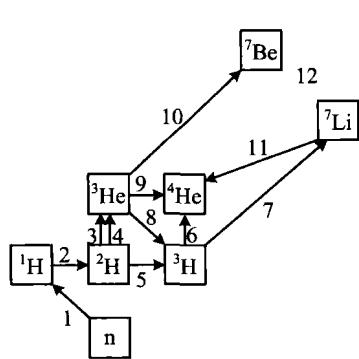
p↔︎n
\mathbf{p}(\mathbf{n},\gamma)\mathbf{d}
\mathrm{d}(\mathbf{p},\gamma)^3\mathrm{He}
d(d,n) ^{3} He
d(d,p) t
t(d,n) ^{4} He
t(α,γ) ⁷Li
{}^{3} He (n,p) t
{}^{3} He (d,p) {}^{4} He
{}^{3} He (α,γ) {}^{7} Be
{}^{7} Li (p,α) {}^{4} He
^{7} Be (n,p) ^{7} Li
因此净效果是生成了极少量的 ^{7} Li，其丰度也与目前的观测结果相符。但由于 ^{7} Li 的丰度实在太低，不会引起进一步的核聚变。当宇宙的温度继续下降，粒子的动能不足以克服原子核间的库仑势垒，热核反应就停止了。图 7.28 给出宇宙早期轻元素生成的有关核反应过程。图 7.29 显示，宇宙早期核合成过程中，各种轻元素的丰度随时间的演化。
图 7.28 宇宙早期的核反应过程
综上所述，宇宙早期的核合成，主要发生在大爆炸之后约200 s（大约3分钟）的时间内，核合成的主要产物是 ^{4} He，同时伴随少量的 ^{3} He, ^{3} H, ^{2} H, ^{7} Li和 ^{7} Be。宇宙中其他更重的元素不是在早期宇宙核合成阶段产生的，它们的生成完全依赖于宇宙演化晚期，即恒星内部的核反应以及超新星爆发。
最后还要指出，上述由标准宇宙学模型计算出来的轻元素丰度，与宇宙中总的重子密度 \rho_{B} 是密切有关的。如图 7.30，其中横坐标表示重子密度，纵坐标为相应的重子密度下所产生的各元素的丰度。从图中看到， ^{4}He 的稳定性使它的丰度受\rho_{B} 的影响较小，但 {}^{2}\mathrm{H}(D) 的丰度则随 \rho_{B} 的上升而急剧下降。这是因为 {}^{2}\mathrm{H} 的活性太大，重子密度高反而为它提供了更多的反应机会从而消失。 {}^{3}\mathrm{He} 对于重子密度的依赖性也不大。但 {}^{7}\mathrm{Li} 这样的较重元素在重子密度较高时就会较多地生成，因为高密度提供了更多的反应机会。特别要强调的是，以上各种轻元素丰度与重子密度之间的依赖关系，为我们提供了确定宇宙中重子密度的一种方法。如图 7.30，图中竖直的带状区域表示，观测到的轻元素丰度允许重子密度变化的范围。有意义的是，这个允许范围可以同时满足 {}^{4}\mathrm{He} 、 {}^{2}\mathrm{H} 、 {}^{3}\mathrm{He} 和 {}^{7}\mathrm{Li} 的观测结果，而这些元素的观测丰度都是通过不同途经、各自独立地得到的。更令人惊讶的是，重子密度的这一结果与其他方法，例如 WMAP 卫星对宇宙
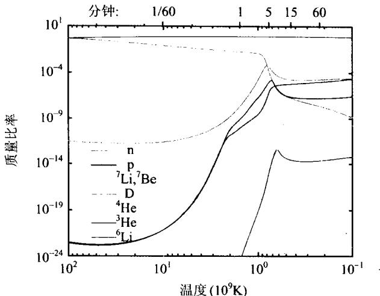
图 7.29 宇宙早期核合成过程 中，轻元素丰度随时间的演化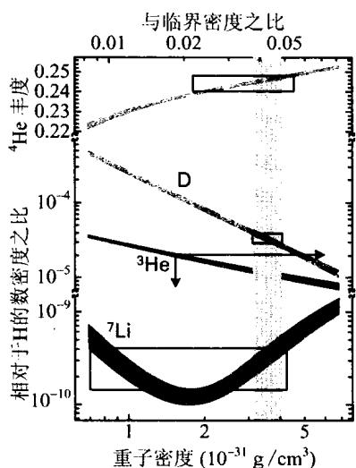
图 7.30 轻元素丰度与重子密度的关系, 图中方框和箭头表示观测结果的允许范围微波背景辐射的分析得到的结果(7.3.18)完全一致。宇宙早期核合成的理论结果与观测结果这样高度相符，是天体物理学中非常罕见的。这更加有力地表明了大爆炸宇宙理论的正确性,因为任何其他的理论,在解释轻元素丰度这一点上都完全无能为力。
早期核合成完成之后经过大约1～3万年，宇宙就由辐射为主而进入物质为主的阶段，此时的(重子)物质处于电离状态，是由电子、质子、原子核以及光子等混合而成的等离子体。在强大的辐射压力的驱散下，宇宙中各种物质粒子均匀地分布在空间里，呈现高度均匀各向同性的状态。由于辐射与物质之间的耦合较强，二者之间达到热平衡，可以用一个统一的温度来标志，而且热平衡状态下的辐射具有黑体谱。
大爆炸之后大约经过30万年，宇宙的温度下降到3 000 K左右。此时差不多所有的自由电子都已经被结合到中性原子之中，辐射与物质之间不再有耦合，这就是复合时期。在此时期之前辐射与自由电子的强烈作用（即汤姆孙散射）使物质不透明，而此时期之后宇宙物质就变得透明了。
复合时期自由电子的数目急剧减少，也就是以氢为主的重子物质的电离率急剧下降。对光子而言，它与电子发生散射的几率也迅速降低（此时背景辐射光子与中性原子的散射截面非常小，可以认为没有相互作用）。复合过程中电离率随温度的变化可以具体计算出来，但这一计算十分繁复，我们就不仔细介绍了。根据这一电离率随温度的变化，还可以进一步计算背景辐射光子与自由电子发生最后一次散射的几率。实际上，辐射与物质退耦的时刻，也就是绝大多数背景光子与自由电子发生最后一次散射的时刻。自那时以后，光子就开始在宇宙空间中自由传播。图7.31a画出了背景光子与自由电子发生最后一次散射的几率随宇宙学红移的分布。从图中可见，几率最大处相应的红移约为 z_{LS}\approx1060 ，且半峰全宽（即峰高一半处的宽度）大约为 \Delta z_{LS}\approx200 。这就是说，如图7.31b所示，如果观测者位于图的中央，则他看到的最后散射光子，大多数来源于半径 z\approx1060 的一个球面（称为最后散射面）附近，实际上不同方向的光子来源有远有近，故更确切地说，这些光子来自一个红移厚度为 \Delta z\approx200 的球层，称为最后散射层。我们现在所接收到的宇宙微波背景辐射光子，就是从最后散射层中的不同位置出发，而到达地球的。
这里还要解释一下复合过程发生时的宇宙温度。我们知道，氢的电离能是13.6 eV，相应的温度大约是 1.6 \times 10^{5} K。由此引发一个问题，为什么复合的温度只有约3000 K（最后散射面的位置z = 1060 K相应的温度），而不是更高？这个问题的回答其实也很简单：因为背景辐射是黑体辐射，虽然3000 K的黑体发出的光子平均能量不高，但黑体辐射的能谱中总有一条“高能尾巴”，其光子的能量足以使氢电离。同时，背景辐射光子的数目是重子数目的 10^{9} 倍，所以尽管是“尾巴”，但其中电离光子的数目也是巨大的。这就使得宇宙温度降到3～4千度时，还有大量的氢处于电离状态。
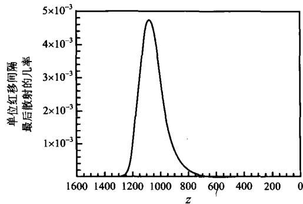
图 7.31a 背景光子发生 最后一次散射的几率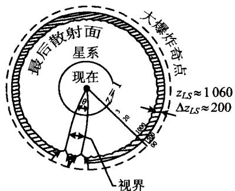
图 7.31b 宇宙背景辐射的 最后散射面和最后散射层前面谈到,COBE 和 WMAP 卫星观测到的宇宙微波背景辐射是高度各向同性的。但高度各向同性并不意味着没有一点起伏或涨落。事实上,不同方向观测到的背景辐射温度有
\Delta T / T \approx 1 0 ^ {- 5}\tag{7.7.22}
的涨落。这一很小的涨落有两个方面的重要意义：一方面，因为它很小，故有力地支持了宇宙学原理关于宇宙各向同性的假设；另一方面，这一涨落反映了宇宙物质密度分布中存在微小的不均匀性，这种微小不均匀性是原初宇宙遗留下来的，并且是形成我们今天观察到的各种天体结构（例如星系）所必需的“种子”。试想，一个 100\% 绝对均匀的物质分布如何能够演化出各种结构？当COBE卫星最初测到 \Delta T / T \leqslant 10^{-4} 的上限时，就有人担忧，如果进一步的测量得到的下限太小，则宇宙过分均匀的结果，会使宇宙结构形成的理论遇到严重困难。幸好，经过反复测量特别是WMAP卫星的进一步确认，我们现在有了一个 \Delta T / T \approx 10^{-5} 的肯定结果。有了这样一个原初涨落或扰动，宇宙结构的形成就不存在根本性的困难了。
对宇宙微波背景辐射温度涨落的分析比较复杂,这是因为,观测到的微小各向异性是在天球球面上分布的,故必须对温度涨落做球谐函数展开,即
\frac {\delta T (\theta , \phi)}{T} = \sum_ {l = 1} ^ {\infty} \sum_ {m = - l} ^ {l} a _ {l, m} \mathbf {Y} _ {m} ^ {l} (\theta , \phi)\tag{7.7.23}
其中系数 a_{l,m} 的值，是通过对全天背景辐射温度涨落的测量而得出的。 l = 1 的项相应于偶极各向异性或偶极矩，它的起因是地球相对于宇宙背景辐射的运动（见图7.13）。这实际上是一种局域效应，可以单独处理，因此在对背景温度各向异性的讨论中可以略去。
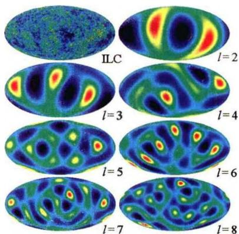
图 7.32 宇宙微波背景辐射内禀温度涨落的全天分布(左上图)及1=2~8的多极各向异性l \geqslant 2 的项表示多极各向异性(或多极矩)，它们所反映的是内禀的涨落，即由于宇宙物质空间分布的(微小)不均匀，而引起的背景辐射温度分布的不均匀。l=2 表示四极矩，l>2 表示 2l 极矩。显然，较大的 l 相应于较小的 \theta 角内的温度涨落。根据球谐函数 Y_{lm} 的零点分布特征，可以估计出 l 与分辨角之间的关系大致为 \theta \sim 180^{\circ}/l 。图 7.32 表示 l=2 \sim 8 的多极矩，图中左上角的图即为所有 l \geqslant 2 求和的结果。
通常把温度涨落的平均值随 l 的分布称为温度功率谱（见图 7.33）。温度功率谱中的第一个峰 ( l \sim 200 ) 称为多普勒峰，
它的产生是由于最后散射面上的速度扰动。第一个峰以后，随着 l 的增加，谱的形
状就变得比较复杂了，出现了若干个小的峰，称为声峰。但总体的趋势是，在 l 越来越大时，峰的高度迅速衰减。计算表明，多普勒峰以及其他声峰的位置和相对幅度不仅与重子和暗物质的比例有关，而且与基本宇宙学参数密切相关。例如，第一个峰的位置直接关系到宇宙的总体曲率 k ，如果宇宙的曲率（拓扑性质）发生改变，多普勒峰相应的 l 值也会变化。在平直宇宙中，多普勒峰出现在大约 l\sim 200 处，正如图7.33所示，因而表明我们的宇宙是平直的，即 k = 0 。如果宇宙具有正曲率，该峰将移向较小的 l ；如果宇宙具有负曲率，则该峰将向较大的 l 方向移动。正是
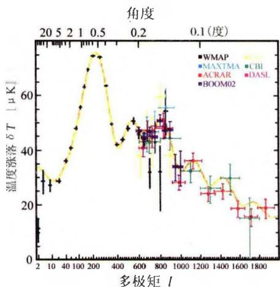
图 7.33 宇宙微波背景 辐射的温度功率谱通过 COBE 特别是 WMAP 对温度功率谱的准确测定,我们才得到了一系列基本宇宙学参数的可靠观测值,例如(7.5.17)所示的结果。在这个意义上的确可以说,以 COBE 和 WMAP 为代表的宇宙微波背景辐射的精密测量,已经使我们完成了对“历史上有没有过大爆炸”的探索,进而步入了“精确宇宙学”研究的时代。
宇宙大尺度结构的基本组元是星系。星系的形成是物质与辐射退耦之后发生的最重要的事件，也是离我们最近、内容极其丰富多样的天体物理过程。
星系是由宇宙极早期产生的微小密度扰动(涨落)，经过引力凝聚作用逐渐发展而成的。从上一节我们知道，宇宙微波背景辐射温度涨落的观测结果是 \delta T / T \sim 10^{-5} ，这表明复合结束之时（即 z \sim 1000 时），物质中也具有 \delta \rho / \rho \sim 10^{-5} 的密度涨落。辐射与物质退耦以后，物质中的密度扰动不再被辐射压力所驱散，从而开始在引力的作用下增长。当密度扰动增长到 \delta \rho / \rho \sim 1 时，就进入非线性增长阶段，然后发生坍缩而形成第一代天体。目前的观测结果表明，许多星系和类星体是在 1 \leqslant z \leqslant 6 期间形成的，在 6 < z < 10 之间的星系或类星体数目非常稀少，而 z > 10 的天体目前还没有观测到。很多人认为，最早的天体（例如所谓的星族Ⅲ天体）可能形成于 z = 20 \sim 30 ，但目前还没有直接的观测证据表明这一点。现在常把 10 < z < 1000 的时期称为宇宙的“黑暗时代”（Dark Ages，参见图7.34a），因为此期间除了弥漫于太空的宇宙背景辐射外，没有任何发光的天体被观测到。我们对这一时期宇宙中究竟发生了什么，实际上几乎是一无所知。
星系和宇宙大尺度结构的形成过程很复杂，其中包括气体冷却、坍缩、恒星形成、气体再加热和再电离(参见图7.34b)等过程，还要考虑周围环境的能量反馈、磁场、角动量交换等一系列复杂因素。除此之外，占宇宙物质总量大部分的暗物质的本质到现在也还不很清楚，只能做某些假设。由于这些方面的原因，大容量、高速度的计算机数值模拟现已成为理论研究越来越重要的手段。另一方面，从地面到太空，各个波段的观测已经延伸到宇宙越来越大的纵深，为研究提供了丰富的观测数据。正是由于近年来计算机数值处理能力的大幅提高和观测技术手段的巨大进步，使得星系和宇宙大尺度结构的研究现在进入了黄金时期。
下面我们先来讨论星系形成的基本条件。虽然一个具体形态的星系形成过程非常复杂，但我们这里只关注这一过程的基本条件和整体性质，故其基本原理与恒星形成的情况非常相似，都是基于金斯引力不稳定性理论。如我们在第4章恒星的演化开始部分所述，只有当气体云的质量 M > M_{j} 时，才会出现引力不稳定性，气体云才能坍缩从而进一步演化成为星系或恒星。
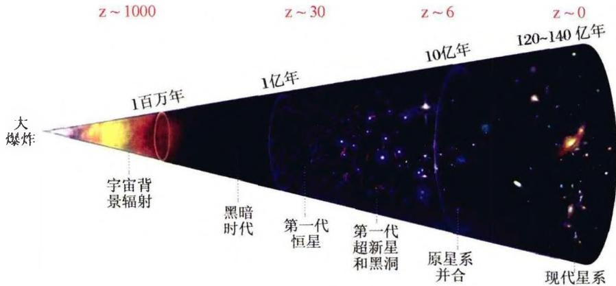
(a) 从极早期宇宙开始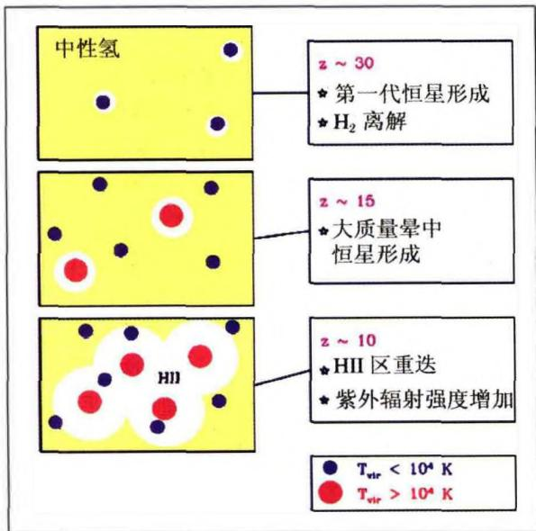
(b) 复合以后第一代天体的形成及其对周围介质的再电离 图7.34 星系形成的主要阶段在具有辐射和物质的宇宙中，总质量密度为 \rho = \rho_{m} + \rho_{r} ，其中 \rho_{m} 和 \rho_{r} 分别表
示物质密度和辐射密度。物质成分的金斯质量为(参见(3.19))
M _ {J} = \frac {4 \pi}{3} \rho_ {m} \left(\frac {\lambda_ {J}}{2}\right) ^ {3} = \frac {1}{6} \pi \rho_ {m} \lambda_ {J} ^ {3}\tag{7.7.24}
其中 \lambda_{J} 为金斯波长(3.18)，
\lambda_ {J} \simeq v _ {s} \left(\frac {\pi}{G \rho}\right) ^ {1 / 2} \quad (v _ {s} \text {为声速})\tag{7.7.25}
下面我们对宇宙不同演化时期的金斯质量做一分析。
1）辐射为主时期 (t<t_{eq}) 。这一时期物质与辐射强烈耦合， p=\rho_{r}c^{2}/3 ，故声速
v _ {s} = \frac {\mathrm{d} p}{\mathrm{d} \rho_ {r}} = \frac {c}{\sqrt {3}}\tag{7.7.26}
是一个常量。由于 \rho \propto a^{-4} （总质量密度由辐射主导），故(7.7.25)给出 \lambda_{j} \propto a^{2} ；又 \rho_{m} \propto a^{-3} ，因而(7.7.24)给出
M _ {J} \propto a ^ {3}\tag{7.7.27}
M_{J} 在 t = t_{eq} 时刻达到的值大约为 10^{16} M_{\odot} （如图7.35）。
v _ {s} = \left(\frac {\partial p _ {m}}{\partial \rho_ {m}}\right) _ {s} ^ {1 / 2} = \left(\frac {\gamma k _ {B} T}{m _ {p}}\right) ^ {1 / 2}\tag{7.7.28}
其中 m_p 为质子的质量，对理想气体 \gamma = 5/3 。宇宙膨胀时，气体体积 V \propto a^3 ，故有 T \propto a^{-3(\gamma-1)} \propto a^{-2} ，于是 v_s \propto a^{-1} ；又 \rho_m \propto a^{-3} ，因而 \lambda_j \propto a^{1/2} 。这样就得到
M _ {J} \propto a ^ {- 3 / 2}
图 7.35 金斯质量随宇宙尺度因
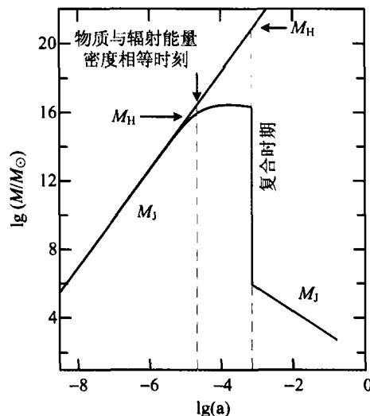
M _ {H}\tag{7.7.29}
由图 7.35 可见, 这一阶段的金斯质量比辐射为主时期小很多, 且随着宇宙的膨胀而递减。
M _ {J} \propto \rho_ {m} \lambda_ {J} ^ {3} \approx \text {常量}\tag{7.7.30}
如图 7.35 所示, 这一时期相应的金斯质量曲线是平的, 即近似保持为常量, 不随宇宙的膨胀而变化。
从上面的分析可以看到，复合（物质与辐射退耦）前后的金斯质量有一个很大的落差，复合之前 M_{J} \sim 10^{16} M_{\odot} ，复合之后是 M_{J} \sim 10^{6} M_{\odot} 。这表明，只有在复合之后，物质之中才能形成星系质量以及更小质量的天体。
我们再来讨论宇宙大尺度结构的形成。宇宙大尺度结构通常指的是尺度 >100\mathrm{Mpc} 的结构，前面已经谈到，在这样大的尺度上宇宙可以看作是均匀各向同性的。但这只表示在比超星系团更大的尺度上，宇宙整体的一种平均性质。实际上，在超星系团以下普遍有不均匀的结构，例如星系团和星系团中的星系。对于大尺度结构而言，星系只是一个基本组元或元素，它们的具体大小和形态就显得不重要了。
现在普遍认为，宇宙目前的结构是由极早期很小的密度扰动发展而成的。密度扰动的“种子”或原初密度扰动被认为是宇宙暴胀（见下一节）阶段的结果。原初扰动是一种随机扰动，扰动幅度在空间中的分布是三维高斯分布，且扰动的功率谱是一种幂律谱。历史上对随机场统计性质的研究，最先始于二战期间对通讯设备电噪声的分析，这是一个一维的问题。到了20世纪50年代，这一分析方法被推
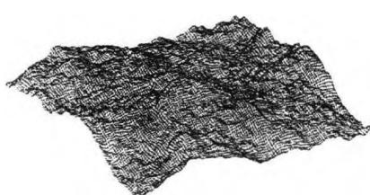
图7.36 一个二维高斯扰动场广到二维情况,用于研究在和缓的风力作用下海面的起伏形状(参见图7.36)。从那以后,对更高维情况的研究进展缓慢,主要原因是数学上的处理非常复杂。直到1981年才给出关于n维随机场几何的严格数学表述,高维随机场(包括三维随机场)的研究才得到广泛的推广应用。
在引力和宇宙膨胀的共同作用下，初始很小的密度扰动被不断增强。密度扰动先是线性增长，后来变为非线性增长，再逐步演化为我们今天所看到的各种形态的宇宙结构。因此，密度扰动的发展应当从宇宙暴胀结束后开始，一直持续至今。
线性演化阶段(即相对密度扰动 \delta(t)\equiv\delta\rho/\rho\ll1 ) 包括全部辐射为主时期，以及直到复合之后很长时间的物质为主时期。用宇宙学红移来表示，这一阶段大致可以持续到 z \sim 70 - 60 或者更晚一点的时间。由于辐射（以及某些其他相对论性粒子例如中微子）是相对论性的，所以密度扰动的演化方程应当用广义相对论来表述。此时不仅要考虑物质和辐射本身的扰动，还要考虑时空度规的扰动。但这样的处理已超出本书讨论的范围，这里我们只介绍一些主要的结果。
在辐射为主时期,密度扰动随时间增长的规律是
\delta \propto a ^ {2} \propto t\tag{7.7.31}
而在物质为主阶段,线性增长的规律是
\delta \propto a \propto t ^ {2 / 3} \tag {7.7.32}
图 7.37 给出了一个典型尺度的密度扰动演化的数值结果，其中包含重子、辐射以及暗物质等不同成分。由图可见，在辐射为主的演化早期，各成分的扰动增长是同步的。到了辐射与物质密度大致相等的时期即 t \sim t_{eq} 前后，辐射与重子的扰动表现为振荡而停止增长，这种情况一直持续到复合结束。此后辐射与物质脱耦而成为残余辐射（背景辐
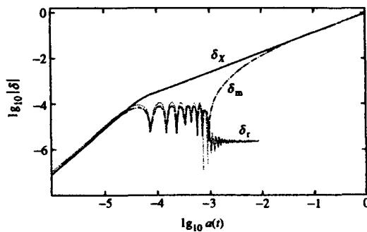
图 7.37 线性增长阶段密度扰动的演化。 \delta_{m},\delta_{r},\delta_{X} 分别代表重子、辐射和暗物质中的密度扰动射),而重子的扰动由于冷暗物质扰动的影响而得到恢复,并且很快与冷暗物质的扰动同步。在整个演化过程中,冷暗物质的扰动基本上一直保持增长,不出现震荡。计算表明,不同质量尺度的扰动演化结果定性地相似,但重子与辐射开始振荡的时间会因质量大小的不同而不同。例如,小质量的扰动开始振荡的时间较早,而大质量扰动则较晚。这就使得不同质量尺度的扰动,演化到最后的振幅大小有所不同,最终使原来的初始扰动谱的形状发生了改变。
在线性演化阶段,主要物理作用是引力、压力(包括辐射压力和气体压力)和暗物质粒子的自由流动(亦即随机热运动)。引力使扰动得到增强,压力却阻止扰动的增长(这一点与引力坍缩时的情况相同)。而无碰撞的暗物质粒子,其自由流动可以使所经之处的密度扰动被衰减。除此之外,光子的阻尼作用也会使得重子成分中的扰动大大减弱甚至消失。上述这些作用综合到一起,在不同尺度上对扰动的增长会产生不同的影响。
● “自上而下”和“自下而上”的成团模式
宇宙中暗物质的质量比重子物质要多出很多,因此在密度扰动演化过程中,暗物质起着重要的作用，它决定了宇宙成团结构形成的模式。按照暗物质粒子热运动速度从大到小，一般把暗物质分为热、温、冷三种类型。如果暗物质是“热”的，例如有质量的中微子，因其速度弥散很大，可以把很大尺度上的密度扰动平滑掉。这样，宇宙中首先形成的将是 10^{13} \sim 10^{15} M_{\odot} 的成团结构，这相当于星系团和超星系团。也就是说，热暗物质(hot dark matter,简称HDM)主导的宇宙中，先形成的是星系团乃至超星系团这样大的结构，再由大的结构逐渐分裂瓦解，最后形成星系这样的小的结构。这种成团模式被称为“自上而下”(top-down)。但COBE和WMAP对宇宙背景辐射的观测结果，已经完全否定了这种可能性，它们的观测结果支持的是“冷”暗物质(cold dark matter,简称CDM)模型(实际上是冷暗物质加不为零的宇宙学常数，即所谓ACDM模型)。按照这一模型，冷暗物质粒子由于速度弥散很小，故有利于小尺度结构先形成。特别是，在复合结束时刻，小尺度上的重子密度扰动被光子的辐射阻尼衰减掉了，但冷暗物质中的小尺度扰动不受光子阻尼的影响，一直保持增长。这样，当重子与辐射脱耦之后，会在冷暗物质扰动的影响下，恢复小尺度上的扰动增长(如图7.37)，从而形成小尺度的结构。小尺度结构形成之后，再由于引力凝聚作用，逐渐形成尺度越来越大的结构。也就是说，冷暗物质主导的宇宙中，先形成星系这样的小尺度结构，再逐级形成星系团、超星系团等更大尺度的结构。这种逐级成团的模式称为“自下而上”(bottom-up)，它得到了包括COBE和WMAP等许多观测结果的有力支持。
当密度扰动达到到 \delta\sim1 ，就进入非线性增长阶段。非线性增长的计算非常复杂，现在主要利用计算机数值模拟来完成。但作为一个简单的解析近似，球对称坍缩模型可以得到与数值模拟相近的结果，因而在研究扰动的非线性演化时常被作为一种基本模型。下面我们就简要介绍一下这个模型。这个模型里的暗物质是冷暗物质，由暗物质坍缩而形成的团块称为暗物质晕，所以这一模型实际讨论的是暗物质晕（或简称暗晕）的形成。暗晕形成以后，重子物质被暗晕的引力所吸积，在晕
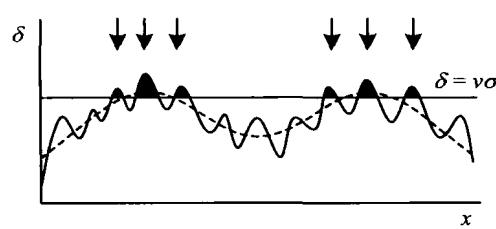
图 7.38 星系通常在一定高度 以上的密度扰动峰处形成中逐渐沉积下来并进一步演化为星系。
目前的看法是，并不是所有的扰动峰处都能形成星系，而只有在密度扰动场中的一些局域极大处，当密度扰动峰的高度达到一定的阈值时（图7.38），才有可能通过非线性演化而坍缩形成星系等天体。这种情况称为星
系的偏置(bias)形成。这一情况的发生可能是因为，重子物质最有可能掉入引力势阱较深的暗物质晕中，而引力势阱的深浅与密度扰动峰的高度是直接相关的。
假设在复合结束后的某一时刻 t_i ，在膨胀宇宙背景中有一个球对称的扰动区域（见图7.39），其中的密度为 \rho_p(t_i) ，周围未受扰动区域的密度为 \rho(t_i) ，因而初始密度涨落是 \delta_i \equiv [\rho_p(t_i) - \rho(t_i)] / \rho(t_i) 。设 0 < \delta_i \ll 1 ，且扰动区域中心处的初始本动速度为零。这样的模型称为球对称坍缩模型，它可以看成是膨胀宇宙背景中的一个正曲率小“宇宙”，其“尺度因子” a(t) 满足的方程与弗里德曼宇宙模型类似（参见(7.5.27)，这里可取宇宙学常数 \Lambda = 0 且辐射的贡献可以忽略）：
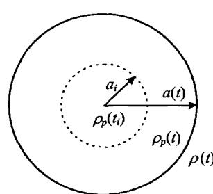
图 7.39 球形扰动区域, 相当于一个闭合的小“宇宙”\left(\frac {\dot {a}}{a _ {i}}\right) ^ {2} = H _ {i} ^ {2} \left[ \Omega_ {p} (t _ {i}) \frac {a _ {i}}{a} + 1 - \Omega_ {p} (t _ {i}) \right]\tag{7.7.33}
其中 a_{i} = a(t_{i}), H_{i} 为 t_{i} 时刻的Hubble常数， \Omega_{p} 为扰动区域的密度参数，定义为
\Omega_ {p} (t _ {i}) = \frac {\rho_ {p} (t _ {i})}{\rho_ {c} (t _ {i})} = \frac {\rho (t _ {i})}{\rho_ {c} (t _ {i})} (1 + \delta_ {i}) = \Omega_ {i} (1 + \delta_ {i})\tag{7.7.34}
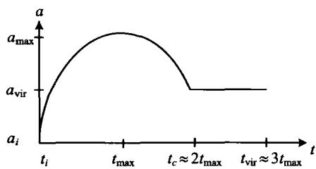
图7.40 扰动区域的尺度其中 \rho_{c}(t_{i}) 为 t_{i} 时刻的宇宙临界密度， \Omega_{i}=\rho(t_{i})/\rho_{c}(t_{i}) 。注意到(7.7.33)方括号中最后两项的意义是 1-\Omega_{p}=\Omega_{k} ，即代表坍缩区域的空间曲率。方程(7.7.33)的解具有标准形式(如图7.40)
a (\theta) = A (1 - \cos \theta)\tag{7.7.35}
t (\theta) = B (\theta - \sin \theta)
因子 a(t) 随时间的演化
(7.7.36)
其中常数 A, B 的值如下：
A = \frac {a _ {i} \Omega_ {p} (t _ {i})}{2 [ \Omega_ {p} (t _ {i}) - 1 ]}, B = \frac {\Omega_ {p} (t _ {i})}{2 H _ {i} [ \Omega_ {p} (t _ {i}) - 1 ] ^ {3 / 2}}\tag{7.7.37}
由上面的结果可得， a 的最大值为
a _ {\max} = 2 A = \frac {a _ {i} \Omega_ {p} (t _ {i})}{\Omega_ {p} (t _ {i}) - 1}\tag{7.7.38}
其相应的时刻为
t _ {\max} = \pi B = \frac {\pi \Omega_ {p} (t _ {i})}{2 H _ {i} [ \Omega_ {p} (t _ {i}) - 1 ] ^ {3 . 2}}\tag{7.7.39}
当 a 达到最大值之后，扰动区域就开始坍缩。由解(7.7.35)和(7.7.36)可以看到，如果忽略压力，则坍缩持续到时间约为 2t_{\mathrm{max}} 时，中心密度就会达到无穷大。但事实上，当中心密度变得很高时，压力就不能忽略，而且此时如果有一点偏离球对称，则很容易出现激波和显著的能量耗散，使得坍缩物质的动能转化为热能，即随机热运动能量。这样，扰动区域就会很快达到位力平衡，坍缩也就实际上停止了。另一条可能的途径是，在坍缩过程中，众多的粒子团块在引力势梯度的影响下，很快达到动力学平衡。这一过程即所谓剧烈弛豫（violent relaxation）过程。对于冷暗物质粒子，更可能发生的是后一种情况。总之，球对称坍缩最后的普遍结果是，不是坍缩到密度无穷大的奇点，而是形成一个体积有限的、满足位力平衡条件的自引力束缚系统。数值模拟结果给出这一时间过程大约为 t_{\mathrm{vir}} \simeq 3t_{\mathrm{max}} 。通过计算机数值模拟的研究，暗晕中的物质密度分布可以用下式近似表示（称为NFW密度轮廓）：
\rho (r) = \frac {\rho_ {0}}{(r / a) (1 + r / a) ^ {2}}\tag{7.7.40}
其中 \rho_0 和 a 为常量，对不同的暗晕有不同的值。显然，当 r \gg a 时 \rho(r) \propto 1 / r^3 ，而在暗晕的中心附近，即 r \ll a 时， \rho(r) \propto 1 / r 。
基于球对称坍缩模型, 还可以进一步从密度扰动的随机统计性质(高斯型分
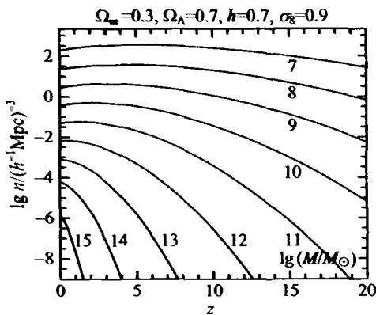
图 7.41 ACDM 宇宙中, 质量大于 M 的天体的共动数密度作为红移 z 的函数 N (>M, z) 。有关宇宙学参数为 \Omega_{m} = 0.3, \Omega_{A} = 0.7, h = 0.7布)出发,得出坍缩天体的数目随质量的分布及其时间演化。这一结果就是普雷斯-谢克特(Press-Schechter)质量函数,或简称P-S质量函数。图7.41给出的,就是P-S质量函数的一个计算实例,其中有关宇宙学参数取为 \Omega_{m}=0.3,\Omega_{A}=0.7,h=0.7 。图中横轴表示的是宇宙学红移z,纵轴表示的是质量大于M的天体的共动数密度作为红移z的函数 N(>M,z) ,曲线上标的数字为 \lg(M/M_{\odot}) 。由图7.41可见,当红移较大时,小质量的暗晕数目比大质量的暗晕数目多出许多;而当红移越来越小(相应于宇宙时刻越来越晚)时,大
质量的暗晕数显著增加。这一成团模式显然是等级式成团，或“自下而上”模式。
密度扰动的非线性演化中,实际发生的物理作用非常复杂,使得演化过程的细节不可能用解析方法严格描述。近些年来随着计算机技术的飞速发展,硬件和软件环境获得极大的改善,因此人们越来越多地采用计算机 N 体数值模拟的方法,对数目巨大的点粒子过程直接进行数值模拟,以期与观测结果相比较。
N 体数值模拟的基本思想是,取一个体积足够大的立方体“盒子”(box)代表我们要研究的宇宙部分。盒子中包含 N 个粒子(天体),它们之间发生引力相互作用。由于模拟的是宇宙大尺度结构的演化,这个盒子的体积需要取得足够大,以使它所包含的宇宙区域整体上是均匀各向同性的;同时,盒子中所包含的粒子数要越多越好,这就需要使用大容量高速度的计算机以及更好的计算方法(例如并行算法)。目前 N 体数值模拟的粒子数已经达到 10^{10} 个以上。
N 体数值模拟实际上是把连续的宇宙密度场用离散的粒子集合来代表。每一粒子的运动方程取决于其他所有粒子的引力共同作用。求出每一粒子在一个很小的时间增量内的位移及速度变化之后，再重新计算引力场的分布，并依此计算下一个时间增量所有粒子运动状态的改变。这样一步一步计算下去，就可以得出所有粒子的最终位置，它们代表最后形成的宇宙结构。这样的计算方法被称为粒子-粒子(PP)方法。
对于 N 个粒子组成的系统，为计算每个粒子的加速度，需要求出其他 N-1 个粒子的 Newton 引力之和；对所有 N 个粒子，这就需要对每一步时间增量进行 N(N-1)/2 次计算，也就是说，所需 CPU 时间大约正比于 N^{2} 。因而当粒子数目 N 很大时，计算效率将急剧下降。为了解决这一问题，人们提出了一些改进的计算方案，例如粒子-网格方法（particle-mesh，即 PM）。这一方法的要点是，把粒子分配到规则划分的网格之中以得到密度分布，然后通过解泊松方程求出引力势。
PM 方法的主要缺欠在于求解引力时的分辨率不是很高, 这是因为网格的空间尺度有限所致。为了提高空间分辨率, 现在常用所谓的粒子-粒子+粒子-网格方法 (\mathrm{PP} + \mathrm{PM} \rightarrow \mathrm{P}^{3} \mathrm{M}) , 即把 PP 方法和 PM 方法结合起来, 在短距离上用 PP 方法, 而在长距离上用 PM 方法。这样做既提高了空间分辨率, 又比单一的 PP 方法大量节省了 CPU 时间。当需要了解成团结构内部更多的细节时, 人们常用 \mathrm{P}^{3} \mathrm{M} 方法; 而如果只是进行宇宙结构的大尺度分析, PM 方法也就足够了。图 7.42~7.44 给出的是宇宙大尺度结构形成的一些数值模拟示例。
实际的宇宙结构形成过程中,除了引力以外,气体压力等因素的影响也很重要。但要描述诸如气体压力(以及磁场、激波、湍流等)这样的物理量,一般需要应用流体力学方法来求解，且无法得出解析形式的解。因此在实际应用中，流体动力学方程数值解法的研究就显得十分必要了。近年来，这方面的研究也获得了很大的进展。
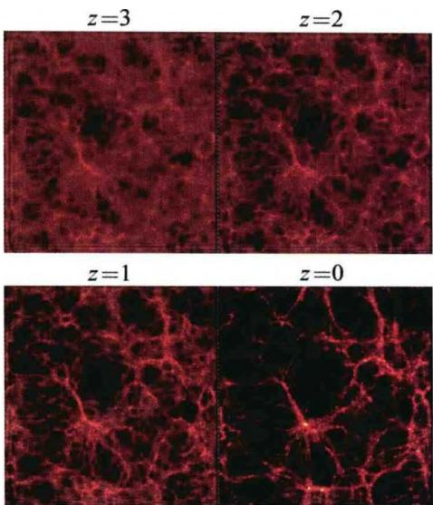
图7.42 计算机数值模拟给出的宇宙大尺度结构形成过程，计算时间为从 z = 3 到 z = 0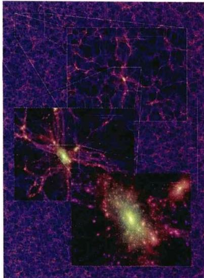
图 7.43 计算机数值模拟给出的宇宙大尺度结构形成的图像, 模拟中用到 100 亿个粒子, 结果包含 2 亿个星系。此图显示的是 z = 0 时, 一个厚度为 15h^{-1} Mpc 的切片中逐级放大的结构。放大最大的部分 (图中最下方) 代表一个富星系团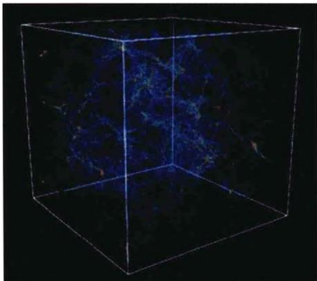
图7.44 计算机数值模拟给出的宇宙大尺度结构的三维图像